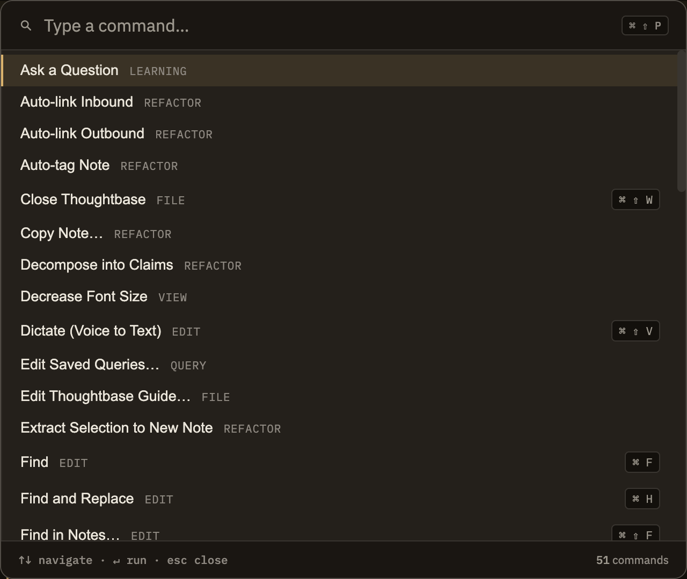

Docs/Maintenance
Maintenance
Minerva keeps search, tables, related-note suggestions, and everything else up to date on its own as you write — you don't run any of this on a schedule. The handful of actions below are here for the rare moment when something looks stale or stuck and you want to give it a nudge. You'll almost never need them.
The actions
Rebuild All Indexes
File menu
File menu
Refreshes everything Minerva keeps behind the scenes — search, tables, and the connections between notes — from your notes as they are right now. Use it if something looks out of date and you want to be sure nothing was missed.
Rebuild Semantic Index
File menu
File menu
Rebuilds the "related notes" and meaning-based search from scratch. Minerva normally keeps this current for you; reach for this only if related-note suggestions seem clearly wrong. It runs in the background and you can keep working while it finishes.
Interrupt Cell
File menu
File menu
Stops a calculation that's taking too long, while keeping the results you've already built up. Handy when a cell is caught in a loop or is slower than you expected.
Restart Calculations
File menu
File menu
Clears everything your calculation cells have worked out and starts them fresh. Reach for this when results look confused or you want a clean slate. See Editor for how calculation cells work.

You don't need a routine
There's no checkup to run and no "repair" button to press on a schedule. Minerva keeps itself in order as you work, so treat this menu as an occasional nudge for the rare case when something looks off — not something to reach for out of habit.